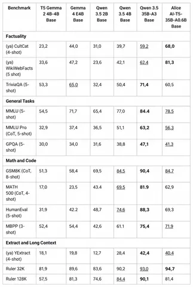
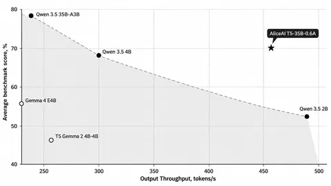

Наша компактная языковая модель, обученная с нуля, формирует быстрые ответы Алисы AI под поисковой строкой. Артур Петросян, Назар Погосский, Никита Семёнов, Антон Викторов и Дима Калашников разобрали на Хабре, как она устроена и как её обучали. Ниже коротко о главном.
AliceAI-T5-35B-A0.6B — Encoder–Decoder с 34,35B параметров и разреженными MoE-слоями: в каждом для токена выбираются восемь экспертов из 512. Архитектуру подбирали под поисковый сценарий — обработать найденные документы и быстро сформировать ответ. Претрейн шёл на 15 триллионах токенов на задаче UL2-денойзинга. Затем контекст растянули с восьми до 128 тысяч токенов через YaRN. Как итог претрейна: после одинаковой процедуры алаймента — у AliceAI-T5-35B-A0.6B-Base 77% винрейта против Qwen3.5-2B в слепом SbS.
Отдельный сюжет — балансировка MoE. При масштабировании обучения балансировка со вспомогательным лоссом оказалась нестабильной: роутинг в энкодере коллапсировал. Переход на aux-free routing из DeepSeek-V3 решил проблему.
В поисковом пайплайне BERT-подобный экстрактор на 80 млн параметров сокращает документы до полезных для генератора фрагментов. Для его дообучения алгоритм на основе Cross-Entropy RL подбирает варианты контекста с учётом качества ответа и штрафа за длину. Сокращение контекста дало около +40% к пропускной способности без потери качества в наших экспериментах. Для продуктовой версии — SFT на ответах, отобранных через Rejection Sampling или улучшенных через Critique & Revision; затем RLHF на GSPO. Пользовательские сигналы тоже идут в обучение: отдельная reward-модель предсказывает Профицит и даёт один из сигналов для RLHF.
У итоговой модели в онлайн-эксперименте винрейт 56,7% против Google AI Overview. Приглашаем пощупать модель, почитать статью и поделиться впечатлениями в комментариях!
ML Underhood

